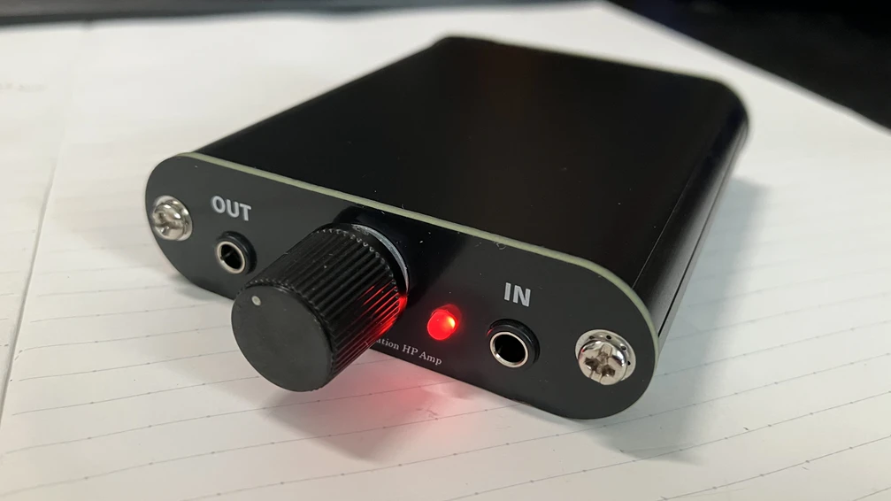
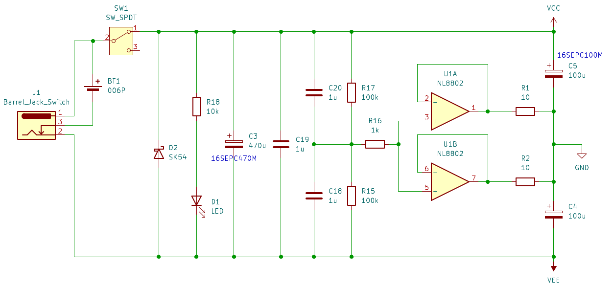
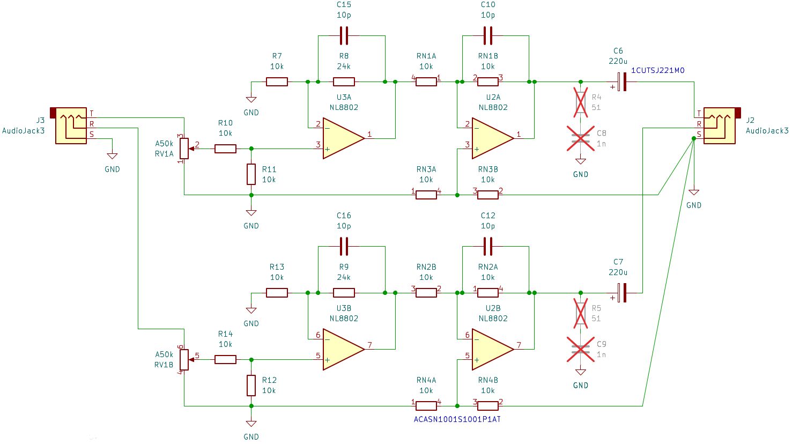
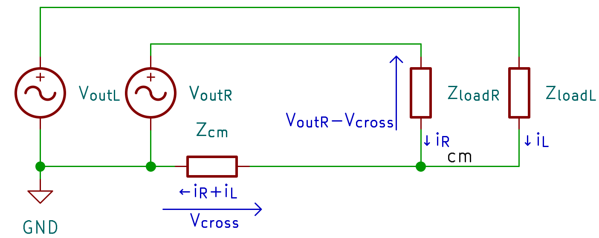
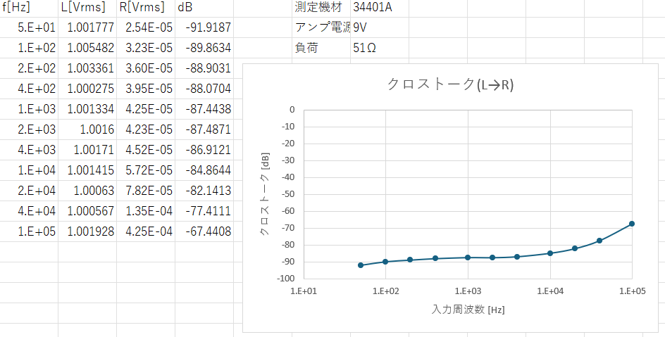
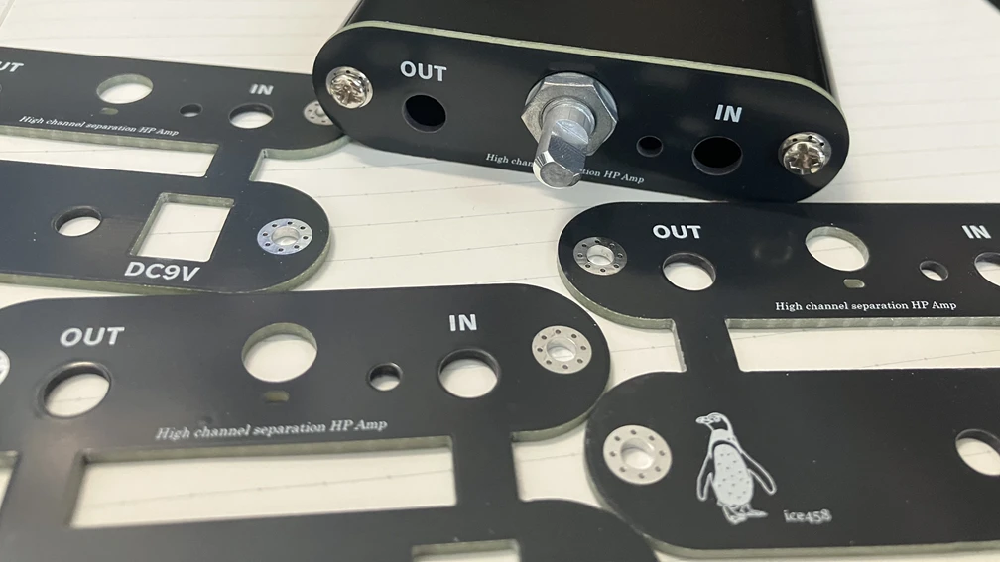
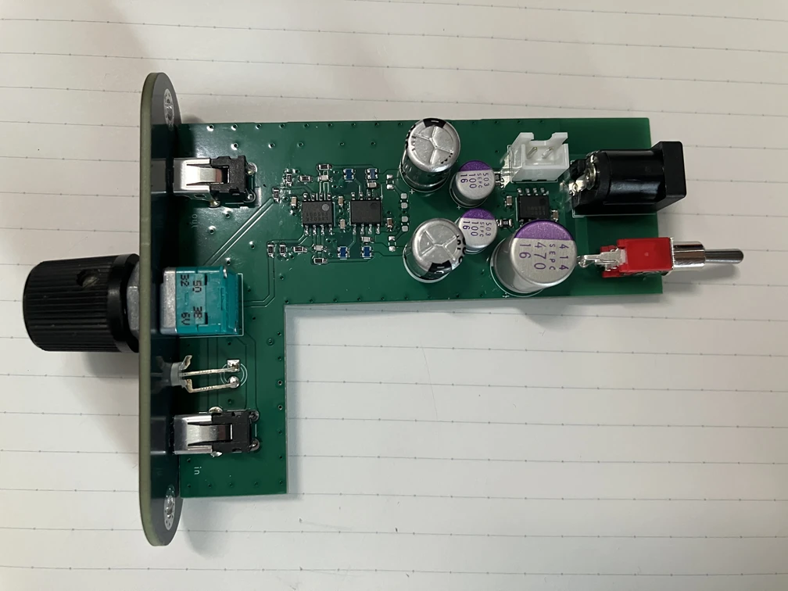
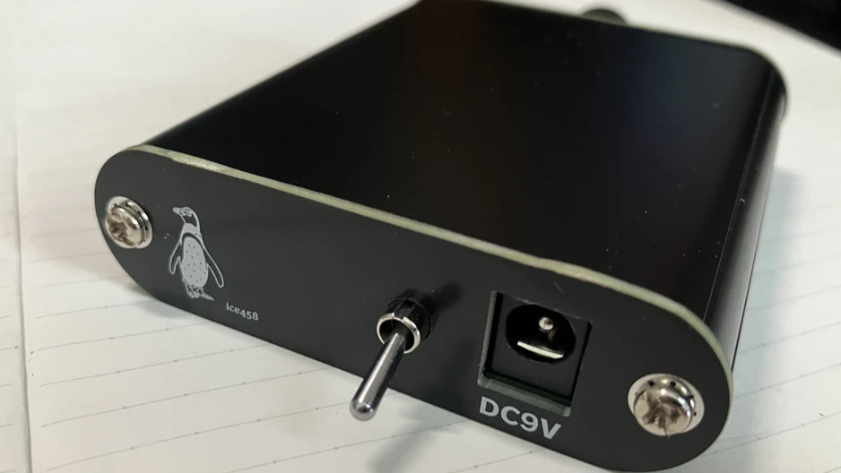

とにかく低クロストークになることを目指したヘッドホンアンプを作りました。入出力アンバランスかつレールスプリッタを用いたGND生成にもかかわらず全可聴帯域でクロストークを-80dB以下に抑えています。

制作したアンプ
レールスプリッタ部分です。

電源の回路図
電源電圧をR17とR15で分圧し、2並列にしたオペアンプのバッファを用いてGND(基準電位)を生成する回路です。
C3とC19は、それより上流からやってくるノイズや電圧変動を抑える役割があります。C20とC18は、分圧抵抗から発生する熱雑音を抑える役割があります。
R16は、電源投入時にオペアンプの入力端子間にあるダイオードを保護するためのものです。
R1、R2は、2つのオペアンプのバランスをとるためと、安定性を確保するためのものです。一般的にこの抵抗が大きいとクロストークが悪化しますが、今回は後述の工夫によりそれを抑制できるため、10Ωでも問題ありません。
次にアンプ部分です。

アンプの回路図
入力にR10とR11で構成される0.5倍のアッテネータを入れています。これにより、初段オペアンプの2つ入力端子から見たインピーダンスの差が小さくなりつつ変動しにくくなり、ボリューム位置にかかわらずクロストークを発生しにくくすることができます。全体的な利得は1.7倍(4.6dB)と小さく設定しました。
今回の回路で特徴的なのは2段目です。減算回路を用いることで、共通インピーダンスによるクロストークの発生を大幅に抑制できます。減算回路のオフセット入力(RN3Bの2番ピン)を出力コネクタのコモン端子に接続することで、クロストークが発生した際にそれを打ち消すように出力が変化します。
クロストークの主な発生メカニズム(Lch→Rch)を以下に示します。

クロストークの発生メカニズム
Zcmは共通インピーダンス、Zloadは負荷インピーダンス、iRとiLはそれぞれRchとLchに流れる電流です。
負荷から戻ってきた電流iR+iLが、共通インピーダンスZcmによって電圧Vcrossに変換されることが発生の主要因です。Vcrossが発生することで、もう一方のチャンネルに意図した電圧と異なる電圧が印加されることになり、これがクロストークとして観測されます。位相は反転しています。この量は次の式で概算できます。
$$ Crosstalk(dB) \approx 20 \log_{10}\left(\frac{Z_{cm}}{Z_{load}}\right) $$実際のヘッドホンアンプを考えると、Zcmにはレールスプリッタの出力インピーダンス、基板のパターンインピーダンス、コネクタの接触抵抗、ケーブルの共通インピーダンスなどが含まれます。
それぞれの値を現実的なところで考えてみましょう。 レールスプリッタ専用ICとして有名なTLE2426の出力抵抗は7.5mΩ、コネクタの接触抵抗はどんなに良くても数mΩ程度です。つまり、基板のパターン設計を非常に良いものにできたとしても、Zcmが10mΩを下回ることは非常に難しいでしょう。 一方、ヘッドホンの負荷インピーダンスZloadは一般的に32Ω、60Ω、300Ω、600Ωなどが多いです。Zcmが10mΩ、Zloadが60Ωの場合、クロストークは約-75.6dBとなります。つまり、アンバランス型ヘッドホンアンプでクロストークを-80dB以下に抑えようとする場合、回路の根本的な工夫が必要になるといえます。
今回制作したアンプは2段目を減算回路にしています。これにより、レールスプリッタの出力インピーダンス、基板のパターンインピーダンスの2つをループゲイン分の1まで小さく見せることができます。つまり、事実上、コネクタの接触抵抗とケーブルの共通インピーダンスのみがZcmに寄与することになります。
ここまでで触れた以外にも、オペアンプの入力容量とそこにつながるインピーダンスの差や、PSRR、CMRRの不完全性、基板のパターンによる結合などがクロストークの発生に寄与します。
両チャンネルに51Ωの抵抗負荷を接続し、出力が1Vrmsとなる正弦波を入れた時のクロストークの周波数特性を測定しました。

クロストークの測定結果
全可聴帯域で-80dB以下に抑えられていることがわかります。また、50Hzにおけるクロストークは-90dB以下と非常に小さく抑えることができています。高い周波数でクロストークが悪化しているのは、ループゲインが低下することでクロストーク抑制効果が弱くなるのと、パターンによる結合の効果が見えてくるためと考えられます。
定位がはっきりしたとても良い音です。
一方で、聴き込むうちに中央の音が無いかのような違和感が気になるようになりました。逆に意図的にクロストークを加えたらどう聞こえるのかを確かめたくなり、後にクロストーク量を任意に可変できるアンプも作りました（記事化はまだですが要約はこちら）。そこで分かったのは、左右同位相の単純なクロストークは聴感への影響が当初の想像よりずっと小さいということと、ヘッドホンではそもそも頭内定位の違和感をなくすのは難しそうということでした。左右の時間差や周波数特性の違いまで含めてみると…？ということで作ったのがHRTFヘッドホンアンプです。
ケースはタカチのMX2-7-9です。付属のねじを用いず、独自にM3のタップを立てました。

パネル基板の写真

実装した基板の写真

アンプ後ろ側の写真
4極ジャックを活用し、コネクタの接触抵抗も打ち消す工夫を実践された方がいらっしゃったので、紹介させていただきます。
ice458さんの回路で4極ジャック使えばプラグの接触抵抗もキャンセルできる気がして基板作ってるhttps://t.co/2bJkNqPHOV pic.twitter.com/HKKcFz8jji
— ばんぶーますたー (@BambooMaster06) September 6, 2025